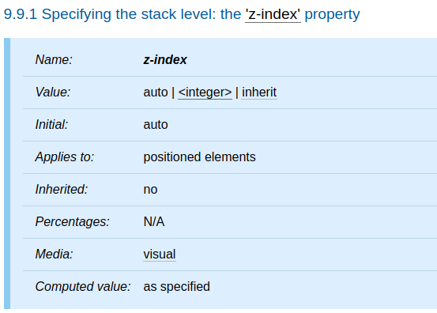
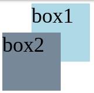
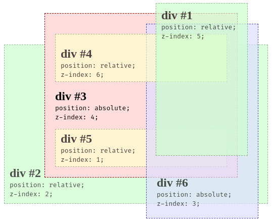

<!DOCTYPE html><html><head><meta charset="utf-8"><title>重新認識 CSS - z-index &amp; stacking context | Titangene Blog</title><meta http-equiv="X-UA-Compatible" content="IE=edge"><meta name="viewport" content="width=device-width,initial-scale=1,maximum-scale=1"><meta name="HandheldFriendly" content="True"><meta name="apple-mobile-web-app-capable" content="yes"><meta name="author" content="Titangene"><link rel="shortcut icon" href="/favicon.ico"><link rel="alternate" href="/atom.xml" title="Titangene Blog"><meta name="description" content="本篇將介紹 CSS 的 z-index 屬性和 stacking context。"><meta property="og:type" content="article"><meta property="og:title" content="重新認識 CSS - z-index &amp; stacking context"><meta property="og:url" content="https://titangene.github.io/article/css-z-index-and-stacking-context.html"><meta property="og:site_name" content="Titangene Blog"><meta property="og:description" content="本篇將介紹 CSS 的 z-index 屬性和 stacking context。"><meta property="og:locale" content="zh_TW"><meta property="og:image" content="https://titangene.github.io/images/cover/css.png"><meta property="article:published_time" content="2019-10-14T13:20:42.000Z"><meta property="article:modified_time" content="2020-02-09T15:01:57.000Z"><meta property="article:author" content="Titangene"><meta property="article:tag" content="IT 鐵人賽"><meta name="twitter:card" content="summary_large_image"><meta name="twitter:image" content="https://titangene.github.io/images/cover/css.png"><meta name="twitter:creator" content="@titangeneTW"><meta name="twitter:site" content="@titangene_blog"><meta property="fb:admins" content="100001106016019"><meta property="fb:app_id" content="2470546159839111"><meta property="og:image:width" content="1200"><meta property="og:image:height" content="630"><meta name="google-site-verification" content="AaJ39L7h-nWwJjXJMhAMtXSF6H6BUgGWXC80kYvLic8"><link href="https://fonts.googleapis.com/css2?family=Roboto&display=swap" rel="stylesheet"><link href="https://fonts.googleapis.com/css?family=Source+Code+Pro&display=swap" rel="stylesheet"><link rel="stylesheet" href="https://cdnjs.cloudflare.com/ajax/libs/font-awesome/5.13.0/css/all.min.css"><link rel="stylesheet" href="https://unpkg.com/gitalk/dist/gitalk.css"><link rel="stylesheet" href="/style.css"><script async src="https://www.googletagmanager.com/gtag/js?id=UA-129758206-1"></script><script>!function(a){function n(){dataLayer.push(arguments)}a.dataLayer=a.dataLayer||[],n("js",new Date),n("config","UA-129758206-1")}(window)</script><script>function setLoadingBarProgress(e){document.getElementById("loading-bar").style.width=e+"%"}</script><meta name="generator" content="Hexo 4.2.0"><link rel="alternate" href="/atom.xml" title="Titangene Blog" type="application/atom+xml"></head></html><body><div id="loading-bar-wrapper"><div id="loading-bar"></div></div><script>setLoadingBarProgress(20)</script><header class="l_header"><div class="wrapper"><div class="nav-main container container--flex"><a class="logo flat-box" href="/">Titangene Blog</a><div class="menu"><ul class="h-list"><li><a class="flat-box nav-home" href="/">Home</a></li><li><a class="flat-box nav-archives" href="/archives">Archives</a></li></ul><div class="underline"></div></div><div class="m_search"><form name="searchform" class="form u-search-form"><input type="text" class="input u-search-input" placeholder="Search"> <i class="fas fa-search"></i></form></div><ul class="switcher h-list"><li class="s-search"><a class="fas fa-search" href="javascript:void(0)"></a></li><li class="s-menu"><a class="fas fa-bars" href="javascript:void(0)"></a></li></ul></div><div class="nav-sub container container--flex"><a class="logo flat-box" href="/">Titangene Blog</a><ul class="switcher h-list"><li class="s-comment"><a class="far fa-comment-alt" href="javascript:void(0)"></a></li><li class="s-top"><a class="fas fa-arrow-up" href="javascript:void(0)"></a></li><li class="s-toc"><a class="fas fa-list-ol" href="javascript:void(0)"></a></li></ul></div></div></header><aside class="menu-phone"><nav><a href="/" class="nav-home nav">Home </a><a href="/archives" class="nav-archives nav">Archives</a></nav></aside><script>setLoadingBarProgress(40)</script><div class="l_body"><div class="container clearfix"><div class="l_main"><article id="post-css-z-index-and-stacking-context" class="post white-box article-type-post" itemscope itemprop="blogPost"><section class="meta"><h2 class="title"><a href="/article/css-z-index-and-stacking-context.html">重新認識 CSS - z-index &amp; stacking context</a></h2><span class="post-time"><span class="post-meta-item-icon"><i class="fa fa-calendar"></i> </span><span class="post-meta-item-text">發表於</span> <time title="建立時間：2019-10-14 21:20:42" itemprop="dateCreated datePublished" datetime="2019-10-14T21:20:42+08:00">2019-10-14 </time><span class="post-meta-divider">|</span> <span class="post-meta-item-icon"><i class="fa fa-calendar-check"></i> </span><span class="post-meta-item-text">更新於</span> <time title="修改時間：2020-02-09 23:01:57" itemprop="dateModified" datetime="2020-02-09T23:01:57+08:00">2020-02-09</time></span> <span class="comments-count"><span class="post-meta-divider">|</span> <span class="post-meta-item-icon"><i class="fas fa-comment"></i> </span><a href="https://titangene.github.io/article/css-z-index-and-stacking-context.html#comments" class="article-comment-count">留言</a></span><div class="post-category"><span class="post-meta-item-icon"><i class="fa fa-folder"></i> </span><span class="post-meta-item-text">分類於</span> <span itemprop="about" itemscope itemtype="http://schema.org/Thing"><a href="/categories/css/" itemprop="url" rel="index"><span itemprop="name">CSS</span></a></span></div></section><section class="toc-wrapper"><h3>目錄</h3><ol class="toc"><li class="toc-item toc-level-2"><a class="toc-link" href="#前言"><span class="toc-text">前言</span></a></li><li class="toc-item toc-level-2"><a class="toc-link" href="#z-index-屬性"><span class="toc-text">z-index 屬性</span></a></li><li class="toc-item toc-level-2"><a class="toc-link" href="#stacking-context"><span class="toc-text">stacking context</span></a></li></ol></section><section class="article typo"><div class="article-entry" itemprop="articleBody"><p></p><p>本篇將介紹 CSS 的 <code>z-index</code> 屬性和 stacking context。</p><a id="more"></a><h2 id="前言"><a class="header-anchor" href="#前言"></a>前言</h2><blockquote><p>「重新認識 CSS」這個系列名稱的由來就如其名，我想要重新認識它。雖然以前就有學過 CSS，但這次想從 CSS Spec 中學到最原始的定義和內容，更加了解 CSS 的原理，讓我在切版的時候可以更加確定自己在做什麼，我踩到的雷只是因為我不夠了解它才會炸開。</p><p>在這 30 天的內容中，會將 Spec 內看到的資料整理成這個系列，也希望正在學 CSS 的各位可以更加了解它。另外我也會同時將文章發至我的 Blog，如果想直接看文內的程式碼 Demo 畫面，可以到我的 Blog 來看 😃。</p><p>本文同步發表於 iT 邦幫忙：<a href="https://ithelp.ithome.com.tw/articles/10228026" target="_blank" rel="noopener">重新認識 CSS - z-index &amp; stacking context</a></p><p>「重新認識 CSS」系列文章發文於：</p><ul><li><a href="https://ithelp.ithome.com.tw/users/20117586/ironman/2617" target="_blank" rel="noopener">iT 邦幫忙</a></li><li><a href="https://titangene.github.io/tags/it-%E9%90%B5%E4%BA%BA%E8%B3%BD/">Titangene Blog</a></li></ul></blockquote><p>從 CSS 2.1 開始，每個 box 在三維空間上都有一個位置，除了水平和垂直的位置之外，這些 box 還會沿著 z 軸來排列，讓一個 box 可以疊在另一個 box 的上面，這個概念就類似於圖層。</p><p>當使用者面對螢幕時，元素的 <code>z-index</code> 屬性設定的數值愈大，則該元素就會愈靠近使用者。</p><h2 id="z-index-屬性"><a class="header-anchor" href="#z-index-屬性"></a><code>z-index</code> 屬性</h2><p>下面是 <code>z-index</code> 屬性的定義表：</p><p></p><ul><li>此元素的 initial value 為 <code>auto</code></li><li>只適用於定位元素，也就是元素的 <code>position</code> 屬性不為預設值 <code>static</code>，包括：<code>absolute</code>、<code>relative</code>、<code>fixed</code></li><li>此元素為不可繼承屬性</li></ul><p><code>z-index</code> 屬性是對 positioned box 指定了：</p><ul><li>當前 stacking context 中 box 的 stack level</li><li>該 box 是否建立 stacking context</li></ul><p>下面介紹各屬性值：</p><ul><li><code>&lt;integer&gt;</code>：該整數是當前 stacking context 中產生的 box 的 stack level。該 box 還建立了一個新的 stacking context</li><li><code>auto</code>：當前 stacking context 中產生的 box 的 stack level 為 0。如果該 box 具有 <code>position: fixed</code> 或是 root，則它還會建立新的 stacking context</li></ul><h2 id="stacking-context"><a class="header-anchor" href="#stacking-context"></a>stacking context</h2><blockquote><p>原本元素會 in-flow 來排列，當元素使用 <code>position</code> 屬性設定排列的位置時，會從原本的位置移至指定的位置，甚至是 out-of-flow，此時就會建立新的 stacking context</p></blockquote><ul><li>render tree 繪製 (painted) 到 canvas 上的順序是根據 stacking context 來決定的</li><li>每個 box 都屬於一個 stacking context，並且每個定位的 box 都有一個整數的 stack level<ul><li>stack level：代表該 box 在 z 軸上相對於同一個 stacking context 中其他 stack level 的位置</li></ul></li><li>stack level 較高的 box 會在 stack level 較低的 box 前面</li><li>box 的 stack level 可能為負數</li><li>在 stacking context 中，stack level 相同的 box 會根據 document tree 的順序來堆疊 (stacked)，也就是越寫在 HTML 後面的元素會蓋住前面的元素</li><li>stacking context 可以包含其他 stacking context</li></ul><p>如以下範例：</p><figure class="highlight html"><table><tr><td class="gutter"><pre><span class="line">1</span><br><span class="line">2</span><br></pre></td><td class="code"><pre><code class="hljs html"><span class="hljs-tag">&lt;<span class="hljs-name">div</span> <span class="hljs-attr">class</span>=<span class="hljs-string">"box box1"</span>&gt;</span>box1<span class="hljs-tag">&lt;/<span class="hljs-name">div</span>&gt;</span><br><span class="hljs-tag">&lt;<span class="hljs-name">div</span> <span class="hljs-attr">class</span>=<span class="hljs-string">"box box2"</span>&gt;</span>box2<span class="hljs-tag">&lt;/<span class="hljs-name">div</span>&gt;</span><br></code></pre></td></tr></table></figure><figure class="highlight css"><table><tr><td class="gutter"><pre><span class="line">1</span><br><span class="line">2</span><br><span class="line">3</span><br><span class="line">4</span><br><span class="line">5</span><br><span class="line">6</span><br><span class="line">7</span><br><span class="line">8</span><br><span class="line">9</span><br><span class="line">10</span><br><span class="line">11</span><br><span class="line">12</span><br></pre></td><td class="code"><pre><code class="hljs css"><span class="hljs-selector-class">.box</span> &#123;<br>  <span class="hljs-attribute">width</span>: <span class="hljs-number">100px</span>;<br>  <span class="hljs-attribute">height</span>: <span class="hljs-number">100px</span>;<br>  <span class="hljs-attribute">font-size</span>: <span class="hljs-number">36px</span>;<br>&#125;<br><span class="hljs-selector-class">.box1</span> &#123;<br>  <span class="hljs-attribute">background-color</span>: lightblue;<br>  <span class="hljs-attribute">margin</span>: <span class="hljs-number">0</span> <span class="hljs-number">0</span> -<span class="hljs-number">50px</span> <span class="hljs-number">50px</span>;<br>&#125;<br><span class="hljs-selector-class">.box2</span> &#123;<br>  <span class="hljs-attribute">background-color</span>: lightslategray;<br>&#125;<br></code></pre></td></tr></table></figure><p>Demo：<a href="https://codepen.io/titangene/pen/OJJNJJY" target="_blank" rel="noopener">Codepen 連結</a></p><p><code>.box2</code> 元素在 <code>.box1</code> 元素之後，所以 <code>.box2</code> 元素會蓋住 <code>.box1</code> 元素：</p><p></p><figure class="highlight html"><table><tr><td class="gutter"><pre><span class="line">1</span><br><span class="line">2</span><br><span class="line">3</span><br><span class="line">4</span><br><span class="line">5</span><br><span class="line">6</span><br><span class="line">7</span><br><span class="line">8</span><br><span class="line">9</span><br><span class="line">10</span><br><span class="line">11</span><br><span class="line">12</span><br><span class="line">13</span><br><span class="line">14</span><br><span class="line">15</span><br><span class="line">16</span><br><span class="line">17</span><br><span class="line">18</span><br><span class="line">19</span><br><span class="line">20</span><br><span class="line">21</span><br><span class="line">22</span><br><span class="line">23</span><br><span class="line">24</span><br></pre></td><td class="code"><pre><code class="hljs html"><span class="hljs-tag">&lt;<span class="hljs-name">div</span> <span class="hljs-attr">id</span>=<span class="hljs-string">"div1"</span>&gt;</span><br>  <span class="hljs-tag">&lt;<span class="hljs-name">h2</span>&gt;</span>div #1<span class="hljs-tag">&lt;/<span class="hljs-name">h2</span>&gt;</span><br>  <span class="hljs-tag">&lt;<span class="hljs-name">code</span>&gt;</span>position: relative;<span class="hljs-tag">&lt;<span class="hljs-name">br</span>/&gt;</span>z-index: 5;<span class="hljs-tag">&lt;/<span class="hljs-name">code</span>&gt;</span><br><span class="hljs-tag">&lt;/<span class="hljs-name">div</span>&gt;</span><br><span class="hljs-tag">&lt;<span class="hljs-name">div</span> <span class="hljs-attr">id</span>=<span class="hljs-string">"div2"</span>&gt;</span><br>  <span class="hljs-tag">&lt;<span class="hljs-name">h2</span>&gt;</span>div #2<span class="hljs-tag">&lt;/<span class="hljs-name">h2</span>&gt;</span><br>  <span class="hljs-tag">&lt;<span class="hljs-name">code</span>&gt;</span>position: relative;<span class="hljs-tag">&lt;<span class="hljs-name">br</span>/&gt;</span>z-index: 2;<span class="hljs-tag">&lt;/<span class="hljs-name">code</span>&gt;</span><br><span class="hljs-tag">&lt;/<span class="hljs-name">div</span>&gt;</span><br><span class="hljs-tag">&lt;<span class="hljs-name">div</span> <span class="hljs-attr">id</span>=<span class="hljs-string">"div3"</span>&gt;</span><br>  <span class="hljs-tag">&lt;<span class="hljs-name">div</span> <span class="hljs-attr">id</span>=<span class="hljs-string">"div4"</span>&gt;</span><br>    <span class="hljs-tag">&lt;<span class="hljs-name">h2</span>&gt;</span>div #4<span class="hljs-tag">&lt;/<span class="hljs-name">h2</span>&gt;</span><br>    <span class="hljs-tag">&lt;<span class="hljs-name">code</span>&gt;</span>position: relative;<span class="hljs-tag">&lt;<span class="hljs-name">br</span>/&gt;</span>z-index: 6;<span class="hljs-tag">&lt;/<span class="hljs-name">code</span>&gt;</span><br>  <span class="hljs-tag">&lt;/<span class="hljs-name">div</span>&gt;</span><br>  <span class="hljs-tag">&lt;<span class="hljs-name">h2</span>&gt;</span>div #3<span class="hljs-tag">&lt;/<span class="hljs-name">h2</span>&gt;</span><br>  <span class="hljs-tag">&lt;<span class="hljs-name">code</span>&gt;</span>position: absolute;<span class="hljs-tag">&lt;<span class="hljs-name">br</span>/&gt;</span>z-index: 4;<span class="hljs-tag">&lt;/<span class="hljs-name">code</span>&gt;</span><br>  <span class="hljs-tag">&lt;<span class="hljs-name">div</span> <span class="hljs-attr">id</span>=<span class="hljs-string">"div5"</span>&gt;</span><br>    <span class="hljs-tag">&lt;<span class="hljs-name">h2</span>&gt;</span>div #5<span class="hljs-tag">&lt;/<span class="hljs-name">h2</span>&gt;</span><br>    <span class="hljs-tag">&lt;<span class="hljs-name">code</span>&gt;</span>position: relative;<span class="hljs-tag">&lt;<span class="hljs-name">br</span>/&gt;</span>z-index: 1;<span class="hljs-tag">&lt;/<span class="hljs-name">code</span>&gt;</span><br>  <span class="hljs-tag">&lt;/<span class="hljs-name">div</span>&gt;</span><br>  <span class="hljs-tag">&lt;<span class="hljs-name">div</span> <span class="hljs-attr">id</span>=<span class="hljs-string">"div6"</span>&gt;</span><br>    <span class="hljs-tag">&lt;<span class="hljs-name">h2</span>&gt;</span>div #6<span class="hljs-tag">&lt;/<span class="hljs-name">h2</span>&gt;</span><br>    <span class="hljs-tag">&lt;<span class="hljs-name">code</span>&gt;</span>position: absolute;<span class="hljs-tag">&lt;<span class="hljs-name">br</span>/&gt;</span>z-index: 3;<span class="hljs-tag">&lt;/<span class="hljs-name">code</span>&gt;</span><br>  <span class="hljs-tag">&lt;/<span class="hljs-name">div</span>&gt;</span><br><span class="hljs-tag">&lt;/<span class="hljs-name">div</span>&gt;</span><br></code></pre></td></tr></table></figure><figure class="highlight css"><table><tr><td class="gutter"><pre><span class="line">1</span><br><span class="line">2</span><br><span class="line">3</span><br><span class="line">4</span><br><span class="line">5</span><br><span class="line">6</span><br><span class="line">7</span><br><span class="line">8</span><br><span class="line">9</span><br><span class="line">10</span><br><span class="line">11</span><br><span class="line">12</span><br><span class="line">13</span><br><span class="line">14</span><br><span class="line">15</span><br><span class="line">16</span><br><span class="line">17</span><br><span class="line">18</span><br><span class="line">19</span><br><span class="line">20</span><br><span class="line">21</span><br><span class="line">22</span><br><span class="line">23</span><br><span class="line">24</span><br><span class="line">25</span><br><span class="line">26</span><br><span class="line">27</span><br><span class="line">28</span><br><span class="line">29</span><br><span class="line">30</span><br><span class="line">31</span><br><span class="line">32</span><br><span class="line">33</span><br><span class="line">34</span><br><span class="line">35</span><br><span class="line">36</span><br><span class="line">37</span><br><span class="line">38</span><br><span class="line">39</span><br><span class="line">40</span><br><span class="line">41</span><br><span class="line">42</span><br><span class="line">43</span><br><span class="line">44</span><br><span class="line">45</span><br><span class="line">46</span><br><span class="line">47</span><br><span class="line">48</span><br><span class="line">49</span><br><span class="line">50</span><br><span class="line">51</span><br><span class="line">52</span><br><span class="line">53</span><br><span class="line">54</span><br><span class="line">55</span><br><span class="line">56</span><br><span class="line">57</span><br><span class="line">58</span><br><span class="line">59</span><br><span class="line">60</span><br></pre></td><td class="code"><pre><code class="hljs css">* &#123; <span class="hljs-attribute">margin</span>: <span class="hljs-number">0</span>; &#125;<br><span class="hljs-selector-tag">html</span> &#123; <span class="hljs-attribute">padding</span>: <span class="hljs-number">20px</span>; &#125;<br><span class="hljs-selector-tag">div</span> &#123;<br>  <span class="hljs-attribute">position</span>: relative;<br>  <span class="hljs-attribute">opacity</span>: <span class="hljs-number">0.7</span>;<br>&#125;<br><span class="hljs-selector-id">#div1</span>,<br><span class="hljs-selector-id">#div2</span> &#123;<br>  <span class="hljs-attribute">background-color</span>: <span class="hljs-number">#cfc</span>;<br>  <span class="hljs-attribute">padding</span>: <span class="hljs-number">10px</span>;<br>  <span class="hljs-attribute">border</span>: <span class="hljs-number">1px</span> dashed <span class="hljs-number">#696</span>;<br>&#125;<br><span class="hljs-selector-id">#div1</span> &#123;<br>  <span class="hljs-attribute">width</span>: <span class="hljs-number">160px</span>;<br>  <span class="hljs-attribute">height</span>: <span class="hljs-number">280px</span>;<br>  <span class="hljs-attribute">margin-bottom</span>: -<span class="hljs-number">220px</span>;<br>  <span class="hljs-attribute">left</span>: <span class="hljs-number">300px</span>;<br>  <span class="hljs-attribute">z-index</span>: <span class="hljs-number">5</span>;<br>&#125;<br><span class="hljs-selector-id">#div2</span> &#123;<br>  <span class="hljs-attribute">width</span>: <span class="hljs-number">500px</span>;<br>  <span class="hljs-attribute">padding-top</span>: <span class="hljs-number">240px</span>;<br>  <span class="hljs-attribute">z-index</span>: <span class="hljs-number">2</span>;<br>&#125;<br><span class="hljs-selector-id">#div3</span> &#123;<br>  <span class="hljs-attribute">background-color</span>: <span class="hljs-number">#fdd</span>;<br>  <span class="hljs-attribute">padding</span>: <span class="hljs-number">40px</span> <span class="hljs-number">20px</span> <span class="hljs-number">20px</span>;<br>  <span class="hljs-attribute">border</span>: <span class="hljs-number">1px</span> dashed <span class="hljs-number">#900</span>;<br>  <span class="hljs-attribute">position</span>: absolute;<br>  <span class="hljs-attribute">top</span>: <span class="hljs-number">40px</span>;<br>  <span class="hljs-attribute">left</span>: <span class="hljs-number">100px</span>;<br>  <span class="hljs-attribute">width</span>: <span class="hljs-number">340px</span>;<br>  <span class="hljs-attribute">z-index</span>: <span class="hljs-number">4</span>;<br>  <span class="hljs-attribute">opacity</span>: <span class="hljs-number">1</span>;<br>&#125;<br><span class="hljs-selector-id">#div4</span>,<br><span class="hljs-selector-id">#div5</span> &#123;<br>  <span class="hljs-attribute">background-color</span>: <span class="hljs-number">#ffc</span>;<br>  <span class="hljs-attribute">border</span>: <span class="hljs-number">1px</span> dashed <span class="hljs-number">#996</span>;<br>&#125;<br><span class="hljs-selector-id">#div4</span> &#123;<br>  <span class="hljs-attribute">padding</span>: <span class="hljs-number">25px</span> <span class="hljs-number">10px</span> <span class="hljs-number">5px</span>;<br>  <span class="hljs-attribute">margin-bottom</span>: <span class="hljs-number">15px</span>;<br>  <span class="hljs-attribute">z-index</span>: <span class="hljs-number">6</span>;<br>&#125;<br><span class="hljs-selector-id">#div5</span> &#123;<br>  <span class="hljs-attribute">padding</span>: <span class="hljs-number">5px</span> <span class="hljs-number">10px</span>;<br>  <span class="hljs-attribute">margin-top</span>: <span class="hljs-number">15px</span>;<br>  <span class="hljs-attribute">z-index</span>: <span class="hljs-number">1</span>;<br>&#125;<br><span class="hljs-selector-id">#div6</span> &#123;<br>  <span class="hljs-attribute">width</span>: <span class="hljs-number">180px</span>;<br>  <span class="hljs-attribute">background-color</span>: <span class="hljs-number">#ddf</span>;<br>  <span class="hljs-attribute">padding</span>: <span class="hljs-number">300px</span> <span class="hljs-number">20px</span> <span class="hljs-number">20px</span>;<br>  <span class="hljs-attribute">border</span>: <span class="hljs-number">1px</span> dashed <span class="hljs-number">#009</span>;<br>  <span class="hljs-attribute">position</span>: absolute;<br>  <span class="hljs-attribute">top</span>: <span class="hljs-number">20px</span>;<br>  <span class="hljs-attribute">left</span>: <span class="hljs-number">200px</span>;<br>  <span class="hljs-attribute">z-index</span>: <span class="hljs-number">3</span>;<br>&#125;<br></code></pre></td></tr></table></figure><p>Demo：<a href="https://codepen.io/titangene/pen/KKKzwZe" target="_blank" rel="noopener">Codepen 連結</a></p><p>範例如圖：</p><p></p><iframe height="559" style="width:100%" scrolling="no" title="stacking context: z-index" src="https://codepen.io/titangene/embed/KKKzwZe?height=559&theme-id=dark&default-tab=css,result" frameborder="no" allowtransparency="true" allowfullscreen>See the Pen <a href="https://codepen.io/titangene/pen/KKKzwZe" target="_blank" rel="noopener">stacking context: z-index</a> by Titangene (<a href="https://codepen.io/titangene" target="_blank" rel="noopener">@titangene</a>) on <a href="https://codepen.io" target="_blank" rel="noopener">CodePen</a>.</iframe><p>資料來源：</p><ul><li><a href="https://www.w3.org/TR/CSS22/visuren.html#z-index" target="_blank" rel="noopener">CSS 2.2 - 9.9.1. Specifying the stack level: the <code>z-index</code> property</a></li><li><a href="https://developer.mozilla.org/en-US/docs/Web/CSS/CSS_Positioning/Understanding_z_index/The_stacking_context" target="_blank" rel="noopener">The stacking context - CSS: Cascading Style Sheets | MDN</a></li></ul><hr></div><div class="article-tags tags"><a href="/tags/it-%E9%90%B5%E4%BA%BA%E8%B3%BD/" title="IT 鐵人賽">IT 鐵人賽</a></div></section><div class="article-share-links"><span>分享：</span> <a class="fab fa-facebook-f" title="Facebook" target="_blank" href="javascript:window.open('https://www.facebook.com/sharer.php?u=https%3A%2F%2Ftitangene.github.io%2Farticle%2Fcss-z-index-and-stacking-context.html', 'Share on Facebook','width=600, height=600')"></a> <a class="fab fa-twitter" title="Twitter" target="_blank" href="javascript:window.open('https://twitter.com/share?url=https%3A%2F%2Ftitangene.github.io%2Farticle%2Fcss-z-index-and-stacking-context.html&amp;text=重新認識 CSS - z-index &amp; stacking context&amp;hashtags=IT鐵人賽&amp;via=titangene_blog', 'Share on Twitter','width=600, height=260')"></a> <a class="fab fa-linkedin-in" title="Linkedin" target="_blank" href="javascript:window.open('https://www.linkedin.com/shareArticle?mini=true&amp;url=https%3A%2F%2Ftitangene.github.io%2Farticle%2Fcss-z-index-and-stacking-context.html&amp;title=重新認識 CSS - z-index &amp; stacking context', 'Share on Linkedin','width=600, height=600')"></a> <a class="fab fa-facebook-messenger" title="Facebook Messenger" target="_blank" href="javascript:window.open('http://www.facebook.com/dialog/send?app_id=2470546159839111&amp;link=https%3A%2F%2Ftitangene.github.io%2Farticle%2Fcss-z-index-and-stacking-context.html&amp;display=popup&amp;redirect_uri=https%3A%2F%2Fwww.facebook.com%2Fdialog%2Freturn%2Fclose%23_%3D_', 'Send in Messenger','width=600, height=600')"></a> <a class="fab fa-telegram-plane" href="https://telegram.me/share/url?url=https%3A%2F%2Ftitangene.github.io%2Farticle%2Fcss-z-index-and-stacking-context.html&text=重新認識 CSS - z-index &amp; stacking context" target="_blank"></a></div><nav id="article-nav"><a href="/article/css-visibility.html" id="article-nav-prev" class="article-nav-link-wrap" title="重新認識 CSS - visibility" rel="prev"><strong class="article-nav-caption">Prev</strong><p class="article-nav-title">重新認識 CSS - visibility</p><i class="fas fa-angle-left"></i> </a><a href="/article/css-series-catalog.html" id="article-nav-next" class="article-nav-link-wrap" title="重新認識 CSS - 總結 &amp; 系列目錄" rel="next"><strong class="article-nav-caption">Next</strong><p class="article-nav-title">重新認識 CSS - 總結 &amp; 系列目錄</p><i class="fas fa-angle-right"></i></a></nav><section id="list_related_posts"><h2>相關文章</h2><ul class="related-posts"><li class="related-posts-item"><a class="related-posts-link" href="/article/css-selector-pseudo-class-2.html">重新認識 CSS - Pseudo-class (偽類) (2)</a><div class="related-posts-item-abstract">Selector (選擇器) 可用來選擇 HTML 和 XML 文件中的節點，並將樣式屬性綁定到文件 (HTML 和 XML) 中的元素上。當選擇器與某元素 match 的時候，就可以對選到的元素進行 CSS 樣式設定。</div></li><li class="related-posts-item"><a class="related-posts-link" href="/article/css-media-query.html">重新認識 CSS - Media query</a><div class="related-posts-item-abstract">今天來介紹 CSS 的 media query 和 media feature。前言「重新認識 CSS」這個系列名稱的由來就如其名，我想要重新認識它。雖然以前就有學過 CSS，但這次想從 CSS Spec 中學到最原始的</div></li><li class="related-posts-item"><a class="related-posts-link" href="/article/css-containing-block.html">重新認識 CSS - Containing block</a><div class="related-posts-item-abstract">本篇將介紹 CSS 的 Containing block。前言「重新認識 CSS」這個系列名稱的由來就如其名，我想要重新認識它。雖然以前就有學過 CSS，但這次想從 CSS Spec 中學到最原始的定義和內容，更加了解</div></li><li class="related-posts-item"><a class="related-posts-link" href="/article/css-formatting-context.html">重新認識 CSS - formatting context & independent formatting context</a><div class="related-posts-item-abstract">本篇將介紹 CSS 的 formatting context 和 independent formatting context。前言「重新認識 CSS」這個系列名稱的由來就如其名，我想要重新認識它。雖然以前就有學過 CS</div></li><li class="related-posts-item"><a class="related-posts-link" href="/article/css-selector-pseudo-element.html">重新認識 CSS - Pseudo-element (偽元素)</a><div class="related-posts-item-abstract">Selector (選擇器) 可用來選擇 HTML 和 XML 文件中的節點，並將樣式屬性綁定到文件 (HTML 和 XML) 中的元素上。當選擇器與某元素 match 的時候，就可以對選到的元素進行 CSS 樣式設定。</div></li><li class="related-posts-item"><a class="related-posts-link" href="/article/css-media-type.html">重新認識 CSS - media type</a><div class="related-posts-item-abstract">如果同將一份文件應用在不同的 media 上呈現，就可以使用 media type 來指定適用的 media。本篇將介紹 CSS 的 media type。前言「重新認識 CSS」這個系列名稱的由來就如其名，我想要重新認</div></li></ul></section><section class="comments" id="comments"><h2>討論區</h2><div id="gitalk-container"></div><div id="disqus_thread" style="margin-top:20px"><noscript>Please enable JavaScript to view the <a href="https://disqus.com/?ref_noscript" target="_blank" rel="noopener">comments powered by Disqus.</a></noscript></div></section></article><script>window.subData={title:"重新認識 CSS - z-index &amp; stacking context",tools:!0}</script></div><aside class="l_side"><section class="m_widget about"><div class="avatar-section"><style>.avatar-cover{background:url(/images/avatar_cover.jpg) 0 10%/cover no-repeat}</style><div class="avatar-cover"></div></div><div class="header">Titangene</div><div class="content"><div class="desc">利用 blog 紀錄學習歷程</div></div><div class="content"><meta itemprop="url" content="https://titangene.github.io"><div class="social-wrapper"><a itemprop="sameAs" href="https://github.com/titangene" class="social github" target="_blank" rel="external"><span class="fab fa-github-alt"></span> </a><a itemprop="sameAs" href="https://www.facebook.com/titangene.tw" class="social facebook" target="_blank" rel="external"><span class="fab fa-facebook-square"></span> </a><a itemprop="sameAs" href="https://www.instagram.com/titangene/" class="social instagram" target="_blank" rel="external"><span class="fab fa-instagram"></span> </a><a itemprop="sameAs" href="https://www.flickr.com/photos/titangene" class="social flickr" target="_blank" rel="external"><span class="fab fa-flickr"></span> </a><a itemprop="sameAs" href="/atom.xml" class="social rss" target="_blank" rel="external"><span class="fas fa-rss"></span></a></div></div></section><section class="m_widget facebook_page"><div class="fb-page" data-href="https://www.facebook.com/titangene.blog/" data-width="250" data-small-header="false" data-adapt-container-width="false" data-hide-cover="false" data-show-facepile="true"><blockquote cite="https://www.facebook.com/titangene.blog/" class="fb-xfbml-parse-ignore"><p><a href="https://www.facebook.com/titangene.blog/" class="social facebook" target="_blank"><span class="fab fa-facebook-square"></span></a></p><p><a href="https://www.facebook.com/titangene.blog/" target="_blank" rel="noopener">Titangene Blog</a></p><p>Loading...</p></blockquote></div></section><section class="m_widget recent"><div class="header">Recents</div><div class="content"><ul class="entry"><li><a itemprop="url" class="flat-box" href="/article/jest-build-test-env.html"><time>2020-05-24</time><div class="name">Jest：建置測試環境 (包含 Babel)</div></a></li><li><a itemprop="url" class="flat-box" href="/article/sass-import-rule.html"><time>2020-05-17</time><div class="name">Sass：@import rule</div></a></li><li><a itemprop="url" class="flat-box" href="/article/sass-use-rule.html"><time>2020-05-10</time><div class="name">Sass：@use rule</div></a></li><li><a itemprop="url" class="flat-box" href="/article/dart-sass.html"><time>2020-05-03</time><div class="name">Dart Sass 介紹 (使用與安裝)</div></a></li><li><a itemprop="url" class="flat-box" href="/article/npm-and-yarn-cheatsheet.html"><time>2020-04-26</time><div class="name">npm / Yarn 套件管理器指令比對 cheatsheet</div></a></li><li><a itemprop="url" class="flat-box" href="/article/nvm.html"><time>2020-04-19</time><div class="name">nvm：安裝、切換不同 Node.js 版本的管理器</div></a></li><li><a itemprop="url" class="flat-box" href="/article/git-detached-head.html"><time>2020-04-12</time><div class="name">淺入 Git：detached HEAD</div></a></li></ul></div></section></aside><script>setLoadingBarProgress(60)</script></div></div><footer id="footer" class="clearfix"><div class="social-wrapper"><a href="https://github.com/titangene" class="social github" target="_blank" rel="external"><span class="fab fa-github-alt"></span> </a><a href="https://www.facebook.com/titangene.tw" class="social facebook" target="_blank" rel="external"><span class="fab fa-facebook-square"></span> </a><a href="https://www.instagram.com/titangene/" class="social instagram" target="_blank" rel="external"><span class="fab fa-instagram"></span> </a><a href="https://www.flickr.com/photos/titangene" class="social flickr" target="_blank" rel="external"><span class="fab fa-flickr"></span> </a><a href="/atom.xml" class="social rss" target="_blank" rel="external"><span class="fas fa-rss"></span></a></div><div>© 2018 - 2020 <span itemprop="copyrightHolder">Titangene</span></div><div>Powered by <a href="https://hexo.io/" target="_blank" class="codename" rel="external noopener">Hexo</a> - Theme <a href="https://github.com/stkevintan/hexo-theme-material-flow" target="_blank" class="codename" rel="external noopener">MaterialFlow</a></div><div><a rel="license noopener" href="http://creativecommons.org/licenses/by-nc-sa/4.0/" target="_blank" rel="external noopener"></a></div></footer><script>setLoadingBarProgress(80)</script><script src="//cdnjs.cloudflare.com/ajax/libs/jquery/2.1.4/jquery.min.js"></script><script src="https://cdnjs.cloudflare.com/ajax/libs/clipboard.js/2.0.0/clipboard.min.js"></script><script src="https://unpkg.com/gitalk/dist/gitalk.min.js"></script><script src="/js/jquery.fitvids.js"></script><script>var SEARCH_SERVICE="hexo",ROOT="/";ROOT.endsWith("/")||(ROOT+="/")</script><script src="/js/search.js"></script><script src="/js/app.js"></script><script src="/js/clipboard-use.js"></script><script type="text/javascript">var gitalk=new Gitalk({clientID:"dd1684f31ee17e25c22b",clientSecret:"4b51bb4a5996b04d58821a6e3da8558f23da4cdf",id:window.location.pathname,repo:"hexo-blog",owner:"titangene",admin:"titangene",distractionFreeMode:"true"});gitalk.render("gitalk-container")</script><script>var disqus_shortname="titangene-blog",disqus_config=function(){this.page.url="https://titangene.github.io/article/css-z-index-and-stacking-context.html",this.page.identifier="article/css-z-index-and-stacking-context.html",this.page.title="重新認識 CSS - z-index &amp; stacking context"};!function(){var t=document.createElement("script");t.async=!0,t.src="//"+disqus_shortname+".disqus.com/embed.js",t.setAttribute("data-timestamp",""+new Date),(document.head||document.body).appendChild(t)}()</script><script id="dsq-count-scr" src="https://titangene-blog.disqus.com/count.js" async></script><div id="fb-root"></div><script>window.fbAsyncInit=function(){FB.init({appId:"2470546159839111",autoLogAppEvents:!0,xfbml:!0,version:"v2.11"}),FB.AppEvents.logPageView()},function(e,n,t){var o,s=e.getElementsByTagName(n)[0];e.getElementById(t)||((o=e.createElement(n)).id=t,o.src="//connect.facebook.net/zh_TW/sdk.js",s.parentNode.insertBefore(o,s))}(document,"script","facebook-jssdk")</script><script>setLoadingBarProgress(100)</script></body>